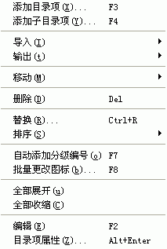

Easy CHM
界面 - 目录编辑区 - 右键弹出菜单

添加目录项
:
弹出
添加目录项对话框
并允许您向CHM目录里增加新项目 - 大标题。
添加子目录项
:
弹出
添加目录项对话框
并允许您向CHM目录里增加新项目 - 小标题。
导入
:
向CHM目录里增加文件请, 参见
右键弹出菜单 - 导入
。
输出
:
输出CHM目录内容, 参见
右键弹出菜单 - 导出
。
移动
:
上下左右移动CHM目录里选中的项目, 支持多选操作, 请参见
右键弹出菜单 - 移动
。
删除
:
删除CHM目录里选中的项目, 支持多选操作。
替换
:
替换CHM目录里项目的文字。
排序
:
对CHM目录的项目进行排序, 参见:
排序
。
自动添加分级编号
:
为CHM目录的项目自动添加分级编号。
批量更改图标
:
批量修改CHM目录的项目的图标设置。
全部展开
:
全部展开CHM目录的所有项目 - 特别是多级目录时。
全部收缩
:
全部展开CHM目录的所有项目。
编辑
:
编辑CHM目录里选中的项目的标题。
目录项属性
:
显示CHM目录里选中的项目的属性。
版权所有 © 2000-2007 国华软件 保留全部权利.